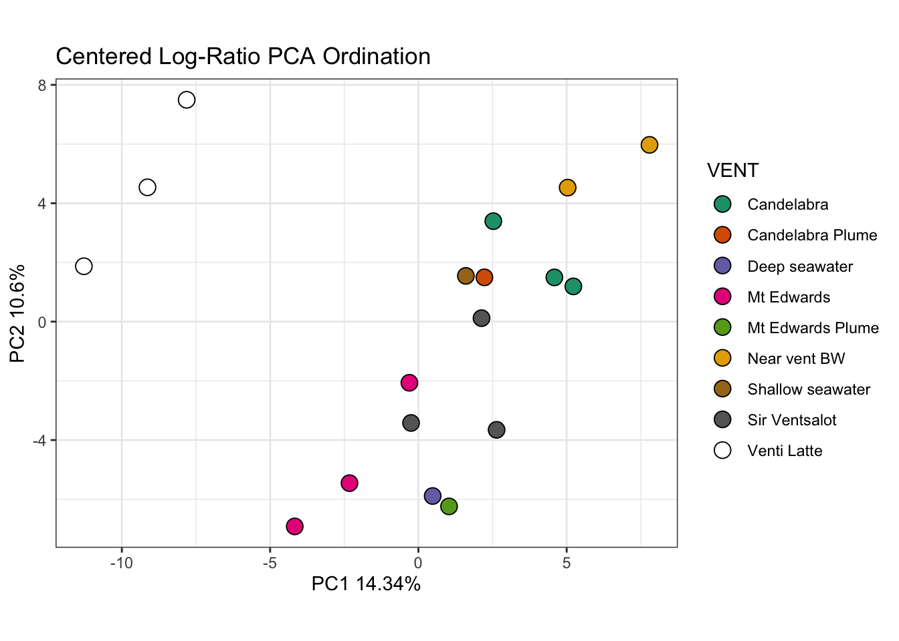
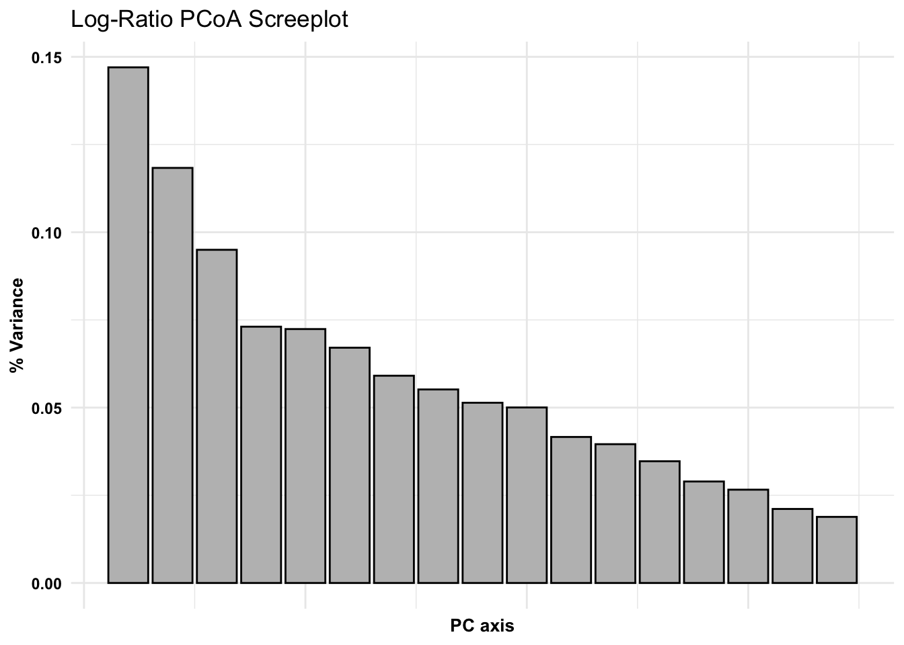

Ordinations - taking complex data and working to present it in 2-3 dimensions, we are placing a new coordinate system (fitting) in place. Principle Component Analysis (PCA) works to generate this coordinate system that is most appropriate for your data. Evaluated based on the eigen decomposition from sample covariance matrix. (Eigenvectors = principle axes)
Background
References / recommended reading:
THIS TUTORIAL: Coenen AR, Hu SK, Luo E, Muratore D, Weitz JS. A Primer for Microbiome Time-Series Analysis. Front Genet. 2020 Apr 21;11:310.
Gloor, G. B., Macklaim, J. M., Pawlowsky-Glahn, V. & Egozcue, J. J. Microbiome Datasets Are Compositional: And This Is Not Optional. Front. Microbiol. 8, 57–6 (2017).
Weiss, S. et al. Normalization and microbial differential abundance strategies depend upon data characteristics. Microbiome 5, 1–18 (2017).
McMurdie, P. J. & Holmes, S. Waste Not, Want Not: Why Rarefying Microbiome Data Is Inadmissible. PLoS Comput Biol 10, e1003531 (2014).
Silverman JD, Washburne AD, Mukherjee S, David LA. A phylogenetic transform enhances analysis of compositional microbiota data. eLife. 2017 Feb 15;6:e21887.
Import data
Set up preliminary environment
library(tidyverse)
Warning: package 'ggplot2' was built under R version 4.2.3
Warning: package 'tidyr' was built under R version 4.2.3
Warning: package 'readr' was built under R version 4.2.3
Warning: package 'dplyr' was built under R version 4.2.3
Warning: package 'stringr' was built under R version 4.2.3
── Attaching core tidyverse packages ──────────────────────── tidyverse 2.0.0 ──
✔ dplyr 1.1.4 ✔ readr 2.1.5
✔ forcats 1.0.0 ✔ stringr 1.5.1
✔ ggplot2 3.5.1 ✔ tibble 3.2.1
✔ lubridate 1.9.3 ✔ tidyr 1.3.1
✔ purrr 1.0.2
── Conflicts ────────────────────────────────────────── tidyverse_conflicts() ──
✖ dplyr::filter() masks stats::filter()
✖ dplyr::lag() masks stats::lag()
ℹ Use the conflicted package (<http://conflicted.r-lib.org/>) to force all conflicts to become errors
library(compositions)
Warning: package 'compositions' was built under R version 4.2.3
Welcome to compositions, a package for compositional data analysis.
Find an intro with "? compositions"
Attaching package: 'compositions'
The following objects are masked from 'package:stats':
anova, cor, cov, dist, var
The following object is masked from 'package:graphics':
segments
The following objects are masked from 'package:base':
%*%, norm, scale, scale.default
Evidence of compositionality (diagnostic)
Do we need to transform our data? We can use the estimate covariance matrix
The determinant of the covariance matrix (what we just calculated) is equivalent to the product of the proportion of variance explained by every PCA axis. If the determinant is 0, that means there is an axis which explains 0 variance that we can’t separate from the other axes. Therefore, data need to be transformed to be suitable for PCA.
Data transformations
Another approach to PCA ordination w/Compositional Data: Log-Ratio Transformations
Log-ratio - combat issues with variance and distribution, all variables will be transformed to be relative to the abundance of an arbitrary focal taxon. Divide all the count data by the abundance of a focal taxa and take the natural log. So why do this? This is one way we can transform our amplicon data to be more appropriate/more suitable for many statistical approaches.
ilr - isometric log ratio
clr - centered log ratio, values will be centered around the geometric average
# Plot PCAggplot(pca_clr_df) +geom_point(aes(x = PC1, y = PC2, fill = VENT), size =4, shape =21, color ="black") +ylab(paste0('PC2 ', round(lograt_variances[2,2]*100,2),'%')) +#Extract y axis value from variancexlab(paste0('PC1 ', round(lograt_variances[1,2]*100,2),'%')) +#Extract x axis value from variancescale_fill_brewer(palette ='Dark2') +ggtitle('Centered Log-Ratio PCA Ordination') +coord_fixed(ratio =1) +theme_bw()
Warning in RColorBrewer::brewer.pal(n, pal): n too large, allowed maximum for palette Dark2 is 8
Returning the palette you asked for with that many colors

PCoA
PCoA is doing a PCA on a distance matrix constructed from the data. We then need a distance matrix. Different distance metrics emphasize separate attributes/factors in microbial community comparison.
Distance matrix
If we want to prioritize differences in presence/absence between samples - use Jaccard. This can be estimated from untransformed count data, and does a pretty good job considering rare taxa. Another is unweighted Unifrac that includes phylogenetic relatedness (see last week’s lesson).
library(vegan)
Loading required package: permute
Loading required package: lattice
Warning: package 'lattice' was built under R version 4.2.3
This is vegan 2.6-4
library(ape)
Warning: package 'ape' was built under R version 4.2.3
Attaching package: 'ape'
The following object is masked from 'package:compositions':
balance
The following object is masked from 'package:dplyr':
where
ggplot(jac_variances, aes(x =as.numeric(PCaxis), y = PercVar)) +geom_bar(stat ="identity", fill ="grey", color ="black") +theme_minimal() +theme(axis.title =element_text(color ="black", face ="bold", size =10),axis.text.y =element_text(color ="black", face ="bold"),axis.text.x =element_blank()) +labs(x ="PC axis", y ="% Variance", title ="Log-Ratio PCoA Screeplot")

# Extract variances from pcoa, from jaccard calculated dist. metric## where samples fall among axespcoa_jac_df <-data.frame(pcoa_jac$vectors) %>%rownames_to_column(var ="TimeofDay") %>%separate(TimeofDay, into =c("excess", "TimeofDay"), sep ="_") %>%select(-excess) %>% data.frame
# Select eigen values from dataframe, round to 4 places. These will be the axes for the 3-D plot# Extract variances from previously generated dataframe, round and multiply by 100 for plottingeigenvalues<-round(jac_variances[,2], digits =4)*100# Plotly - 3-D# plotly::plot_ly(pcoa_jac_df, type='scatter3d', mode='markers',# x=~Axis.2,y=~Axis.3,z=~Axis.1,colors=~brewer.pal(6,'Set1'),color=~TimeofDay)%>%# layout(font=list(size=18),# title='PCoA Jaccard Distance',# scene=list(xaxis=list(title=paste0('Co 2 ',eigenvalues[2],'%'),# showticklabels=FALSE,zerolinecolor='black'),# yaxis=list(title=paste0('Co 3 ',eigenvalues[3],'%'),# showticklabels=FALSE,zerolinecolor='black'),# zaxis=list(title=paste0('Co 1 ',eigenvalues[1],'%'),# showticklabels=FALSE,zerolinecolor='black')))
Euclidean
Performing the log-ratio transformation makes the data all occupy a similar dynamic range, so we can use magnitude-sensitive distances like Euclidean distance.
Euclidean, recommended for analysis of the difference in compositions. e.g., when we are working to understand changes in relative abundance. Because it depends on the composition, we must input transformed data.
Repeat screeplot check. Extract variances from pcoa, from jaccard calculated dist. metric
euc_variances <-data.frame(pcoa_euc$values$Relative_eig) %>%select(PercVar ='pcoa_euc.values.Relative_eig') %>%rownames_to_column(var ="PCaxis") %>% data.frame# head(euc_variances)# Screeplot checkggplot(euc_variances, aes(x =as.numeric(PCaxis), y = PercVar)) +geom_bar(stat ="identity", fill ="grey", color ="black") +theme_minimal() +theme(axis.title =element_text(color ="black", face ="bold", size =10),axis.text.y =element_text(color ="black", face ="bold"),axis.text.x =element_blank()) +labs(x ="PC axis", y ="% Variance", title ="Euclidean\nLog-Ratio PCoA Screeplot")
Compare what the previous scree plot looked like.
Is there a difference in the ordinate output when we use a different metric?
To compare with the euclidean distance ordination representing differences in relative composition. Further note: If your ordination has data which align in a ‘T’ or ‘+’ shape perpendicular to the axes this is often diagnostic of covariance attributed to the higher dimensions which are not plotted.
What happens if I have a screeplot that requires 3D, but I can’t do it?
Although our statistical ordinations appear to require at least 3 dimensions to communicate the data. However, we don’t always have the budget for a 3D plot. So we may want to impose the condition on an ordination technique that the answer MUST go in 2D. We turn to NMDS here.
NMDS
set.seed(1984)
So we can compare the relative composition based distance metric to the presence/absence based distance metric
library(vegan)# ?metaMDS()
NMDS: force data into a desired number of dimensions, works to preserve all pairwise distances between points.
Start with Euclidean distance again. But then transform with NMDS.
euc_dmat <- compositions::dist(asv_df, method ="euclidean") # From aboveeuc_nmds <- vegan::metaMDS(euc_dmat, k =2, autotransform =FALSE)
Run 0 stress 0.03176447
Run 1 stress 0.0317942
... Procrustes: rmse 0.01591051 max resid 0.2519757
Run 2 stress 0.03271511
Run 3 stress 0.03191601
... Procrustes: rmse 0.01869626 max resid 0.3884156
Run 4 stress 0.03261754
Run 5 stress 0.03334667
Run 6 stress 0.0355446
Run 7 stress 0.0332108
Run 8 stress 0.03165351
... New best solution
... Procrustes: rmse 0.0197889 max resid 0.4094653
Run 9 stress 0.0307389
... New best solution
... Procrustes: rmse 0.01601655 max resid 0.3265687
Run 10 stress 0.03206538
Run 11 stress 0.03114016
... Procrustes: rmse 0.01832106 max resid 0.3892465
Run 12 stress 0.03297826
Run 13 stress 0.02989012
... New best solution
... Procrustes: rmse 0.02733152 max resid 0.548664
Run 14 stress 0.03282565
Run 15 stress 0.03122517
Run 16 stress 0.03259375
Run 17 stress 0.03179146
Run 18 stress 0.03220929
Run 19 stress 0.03184396
Run 20 stress 0.03285802
*** Best solution was not repeated -- monoMDS stopping criteria:
20: no. of iterations >= maxit
Repeat with the Jaccard transformation
jac_dmat <- vegan::vegdist(t(asv_df), method ="jaccard") # From abovejac_nmds<- vegan::metaMDS(jac_dmat, k =2, autotransform =FALSE)
Run 0 stress 0.1423445
Run 1 stress 0.1919306
Run 2 stress 0.1373766
... New best solution
... Procrustes: rmse 0.04095258 max resid 0.1313601
Run 3 stress 0.1811173
Run 4 stress 0.1375691
... Procrustes: rmse 0.01209244 max resid 0.03782542
Run 5 stress 0.1828614
Run 6 stress 0.1939918
Run 7 stress 0.1933375
Run 8 stress 0.2179407
Run 9 stress 0.1734027
Run 10 stress 0.1811173
Run 11 stress 0.1607189
Run 12 stress 0.1373766
... New best solution
... Procrustes: rmse 1.788908e-05 max resid 4.848831e-05
... Similar to previous best
Run 13 stress 0.1423445
Run 14 stress 0.1610092
Run 15 stress 0.1375691
... Procrustes: rmse 0.01208686 max resid 0.03781589
Run 16 stress 0.1827459
Run 17 stress 0.180109
Run 18 stress 0.1676982
Run 19 stress 0.1424365
Run 20 stress 0.2052544
*** Best solution repeated 1 times
Take a look at stress - overall this value is not extremely informative, but know that the closer stress is to 1 the less representative of your actual data the NMDS is.
euc_nmds$stress
[1] 0.02989012
jac_nmds$stress
[1] 0.1373766
Additionally, the axes for NMDS are totally arbitrary, so axis scaling does not matter and data can be rotated/reflected about axes and the NMDS is still the same euc_nmds$points #Extract points from NMDS